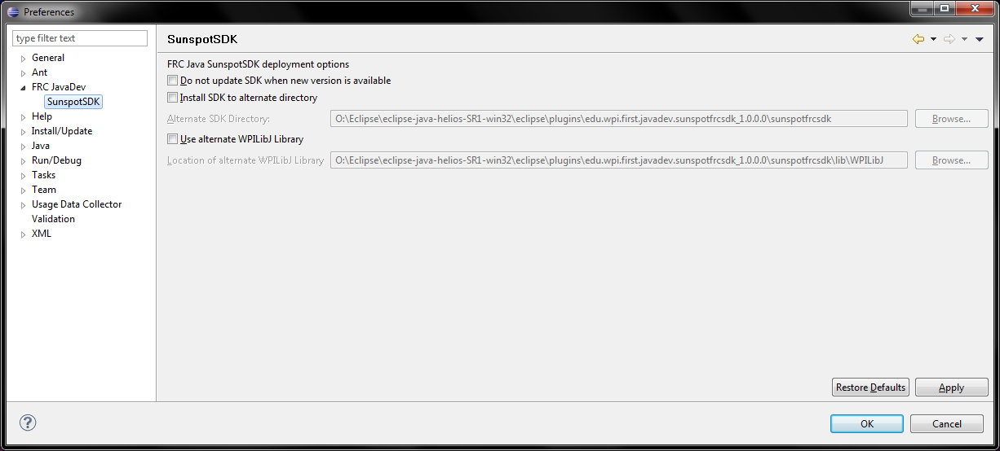

The SDK preference page is used to configure options relating to the Java libraries and WPILibJ.
The first option allows the user to disallow updates, which is not recommended. Only use this if you wish to save on disk space
The second set of options allows the user to install the SDK to a non-standard location. The new location must exist, and Eclipse must have write permissions for it.
The third set of options allows the user to specify a non-standard version of WPILibJ. This is useful if you have a local, modified copy which you wish to use instead of the standard one.
The SDK and WPILibJ options will only take effect for new projects; you must manually change the properties of existing projects if you wish to change which libraries you use. Be warned, changing the SDK location after creating a project may also break current projects, as the old SDK location will be cleared to prevent unnecessary duplicates. This can be fixed by manually changing the class path of the project to the new location